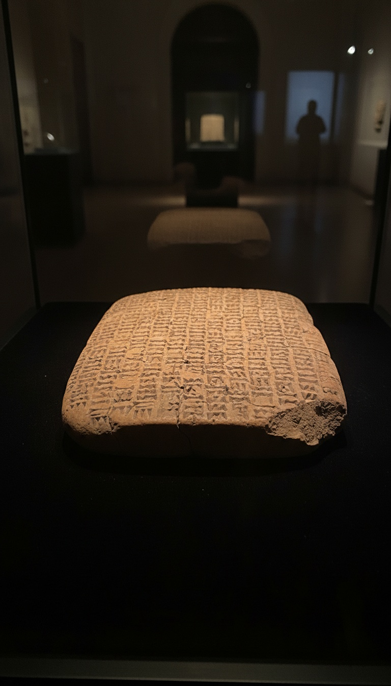

Noah was not the first flood survivor on record. He was the rewrite.
The original name is sitting in a glass case in Bloomsbury, baked into clay a thousand years before any scribe in Jerusalem put quill to scroll. Almost nobody knows this. That is exactly why we need to talk about it.

The Tablets Have a Catalog Number
The Atrahasis Epic survives on three clay tablets composed during the Old Babylonian period, dated to approximately 1700 BCE. The most cited witness, tablet K.11624, was excavated by Sir Austen Henry Layard at Kouyunjik in the nineteenth century and now sits in the British Museum collection in London.
The hero's name on those tablets is Atrahasis. It translates roughly to "exceedingly wise." He is not a footnote. He is the protagonist of the oldest complete flood narrative we have in any human language.
Genesis, by contrast, was compiled in its current form somewhere between 600 and 500 BCE, most likely during or just after the Babylonian exile. That is a thousand year gap. The Hebrew scribes were not writing in a vacuum. They were writing in Babylon, surrounded by these stories.
Every Beat of the Story Matches
In the Atrahasis Epic, the god Enki warns Atrahasis of the coming flood by speaking through a reed wall, a workaround to avoid breaking a divine oath of silence. The warning is delivered in secret. The hero is told to build.
Atrahasis constructs a boat to specific dimensions. He seals the hull with bitumen, the same black tar that still seeps out of the ground in southern Iraq. He brings animals aboard. He survives the deluge. He sends out birds to test for dry land.
Read Genesis 6 through 8 and check the choreography. Specific dimensions. Pitch on the inside and out. Animals two by two. A raven, then doves. The match is not thematic. It is procedural.
The Phrase That Gives It Away
After the waters recede, Atrahasis offers a sacrifice on a mountain. The Akkadian text says the gods "gathered like flies" over the smell of the offering. They had been starved during the flood. They swarmed.
Genesis 8:21 says the Lord smelled the "sweet savor" of Noah's burnt offering and resolved never to curse the ground again. The smell triggers the covenant. Different theology. Identical narrative trigger. The sacrifice scene is the hinge in both texts.
One culture is polytheistic and brutal about it. The other is monotheistic and sanitized. The skeleton underneath is the same skeleton.
The original flood survivor was granted immortality. The scribes who wrote Genesis cut that ending. Noah dies in chapter nine. Atrahasis never does.
Why the Flood Happened in the First Place
Here is where the two stories diverge in a way nobody talks about. In the Atrahasis Epic, the god Enlil sends the flood because humans had become too numerous and too loud. They were disturbing his sleep. The motive is petty and demographic.
In Genesis, the motive is moral. Humanity is corrupt. Violence fills the earth. God grieves that he made them. The rewrite turns a noise complaint into a theology of sin.
That edit is doing enormous work. It transforms a story about cranky gods managing overpopulation into a story about divine justice. Same flood. Different reason. The Hebrew scribes were not just copying. They were arguing with the source material.
The Detail Genesis Removed
In the Atrahasis tradition, the flood survivor is granted immortality at the end of the story. He is taken to live among the gods. He does not die. That ending is preserved intact in the later Epic of Gilgamesh, where the same flood hero appears under the name Utnapishtim and tells Gilgamesh his story from a place beyond death.
Genesis erases this. Noah disembarks, plants a vineyard, gets drunk, curses his grandson, and dies at 950 years old in Genesis 9:29. He is mortal. He is flawed. He is finite.
That is a specific editorial choice. The scribes had the immortality ending available to them. The Babylonian version was the dominant cultural script in the region. They knew it. They cut it.
Who Benefits From a Mortal Noah
An immortal flood survivor is a rival authority. He is a living witness to the prediluvian world, a man who walked with the old gods and remembers what they said. In the Mesopotamian version, Utnapishtim is the keeper of secrets Gilgamesh travels across the world to find.
A theology built on a single transcendent God cannot tolerate a deathless human running around with firsthand divine knowledge. The competing memory has to be closed off. The witness has to be buried.
So Noah dies. The line of revelation runs through Moses instead. The flood becomes prologue, not an open door. The edit consolidates authority in a single priestly tradition and shuts down any rival channel to the divine.
The tablets are still in the British Museum. The phrase about the gods gathering like flies is still in the Akkadian. The immortality ending is still in Gilgamesh. None of this is hidden. It is just not taught.
The question is not whether Genesis borrowed from Atrahasis. That argument is over. The question is what else the scribes cut when they were rewriting the script. Because if they were willing to erase the survivor's immortality, what other ending did they decide we were not allowed to read?
Books that informed this investigation
As an Amazon Associate, Hidden Epoch earns from qualifying purchases. Cost to you: nothing.
Research safely
The VPN we use to research without being tracked. First 3 months free.
Get NordVPN →